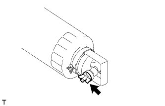

ДАТЧИК ОТСТОЙНИКА ТОПЛИВА > СНЯТИЕ |
| 1. REMOVE FUEL FILTER ASSEMBLY |
Disconnect the 2 fuel hoses.
Disconnect the level warning switch connector.
Remove the 2 nuts and fuel filter.
| 2. DRAIN FUEL |
|  |
Loosen the fuel filter drain plug and drain the fuel from the fuel filter.
| 3. REMOVE FUEL FILTER CASE |
Detach the level warning switch connector clamp from the fuel filter cap.
Remove the 2 bolts, fuel filter case and fuel filter gasket.
| 4. REMOVE LEVEL WARNING SWITCH |
Clamp the fuel filter cap in a vise between aluminum plates.
Using pliers, remove the level warning switch.
Remove the warning switch gasket from the level warning switch.